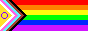
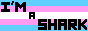

Hi, I'm Gavin! I enjoy programming, swimming, and theater tech. I also dabble in photography, urban planning/transportation, and linguistics.
I'm currently working on a compiler and browser extension. Projects I've previously made that I'm proud of are a threaded messaging platform, n-dimensional tic-tac-toe, and a simple accounting/bookkeeping app. Oh and a mini-homemade-Scratch, but for the logo programming language.
If you want to know more, check out @gavinmorrow on GitHub, or email gavinfmorrow (at) gmail [dot] com. For the source code of this website, see @gavinmorrow/website25.
 Everything (text, code, buttons, photos) on this site made by me, without AI. The favicon for this site was made by a wonderful friend :]
(btw, I'm still actively working on making this website. I haven't fully decided what I want to put here, so for now it's pretty empty.)